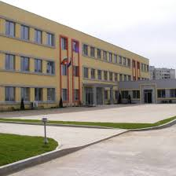
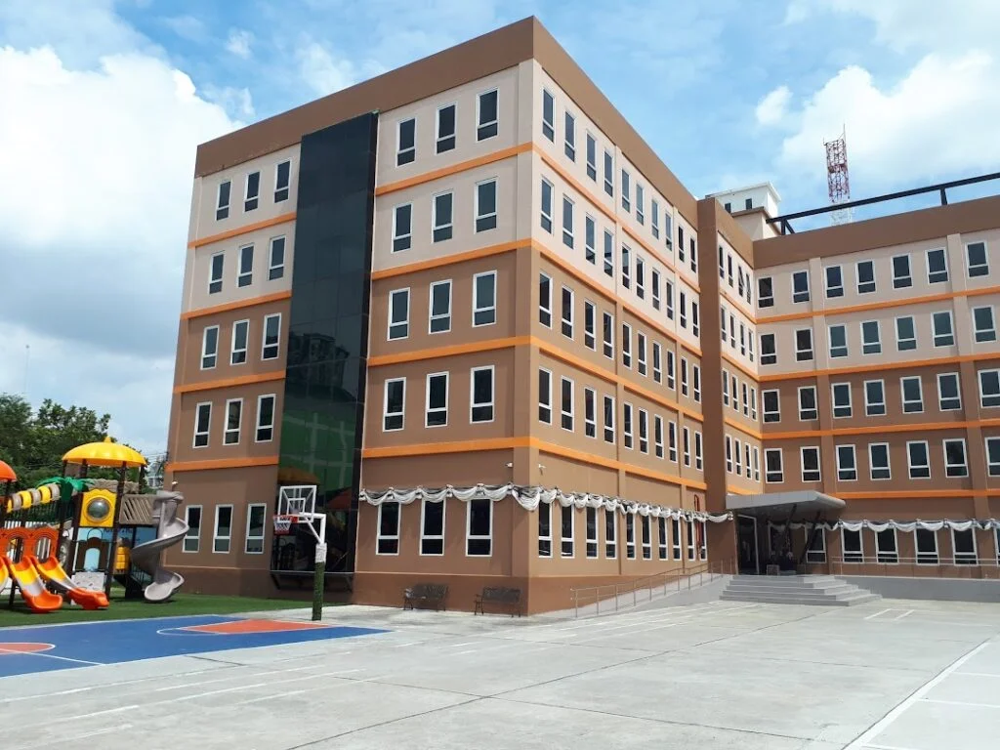

About Me
Born: July 5, 2009
I'm a passionate student who enjoys sports, learning, and personal development. I believe in hard work, teamwork, and always striving to become a better version of myself.
Sports: Basketball, Football, Table Tennis
Hobbies: Reading, Exercising, Staying Active
Education

Drujba School, Sofia, Bulgaria
Years: Year 1 – Year 6

Chindamanee School, Bangkok, Thailand
Years: Year 7 – Year 11
Skills
- Teamwork and Communication
- Adaptability and Cultural Awareness
- Basic Web Development
- Leadership and Initiative
- Time Management
Achievements
- Represented school in basketball tournaments
- PArticipated in STEAM festival
- Built and designed my own website portfolio
Goals
I aspire to study at Groningen University to further develop my academic skills, engage with inspiring people, and work towards becoming a leader in my chosen field.
My long-term goal is to make a positive difference through hard work, learning, and community involvement.
Contact
erkan.h@chindamanee.ac.th